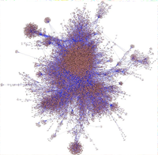
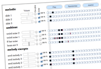
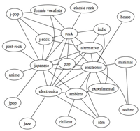
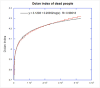

Creative product development, underpinned by strong technical knowledge.
I started out as a developer working at an agency, but changed my focus away from coding to digital production roles. I'm now working as a freelance, combining my technical and creative experience.
Having technical understanding gives me a strong insight into what's possible on the web, and the ability to prototype it.
As a Development Producer at Monterosa I frequently pitched ideas to TV commissioners. I'm used to presenting my ideas and explaining the development process.
- API experience Facebook / Foursquare / Twitter / Linked In (among others)
- Semantic web technologies SPARQL, DBpedia, Freebase
- Mapping Google maps / Open Street Map / Mapstraction API, TileMill GIS system for producing custom slippy maps
- Programming Javascript, Flash, PHP and Rails
- Sentiment analysis
- Medium is the message Having worked on 2-Screen TV, I've spent plenty of time thinking about the ergonomics of new kinds of media
- Numbers I've got some handy maths and stats skills from my physics degree
Examples
Facebook social graph analysis
Monterosa's Million Pound Drop playalong game allows users to compete with their Facebook friends as they play.
We wanted to maximise the number of friends online. I used Cytoscape to visualise the clusters of friends playing the game and generate insights that could be used to increase the level of connectivity between players.
Random Seed generative music player
Most music is now played back on computers, but almost no music takes advantage the platform. Random Seed uses algorithms to vary the music that it plays back.
Read more about the project...
Darfur maps for Crisis Action
Crisis Action works to draw government attention to human rights abuses. A recent report highlighted the ongoing conflict in Sudan.
I took data on arial assaults, cleaned it and mapped it by date and intensity to illustrate the persistent level of violence.
The data is confidential so I can't share the map here.
Musical genre analysis
Does musical genre mean something different in the digital world? If you don't have hunt through racks of categorised vinyl to find obscure gems, do it change the way you listen?
Using data from Last.FM's API I graphed the relationships between musical genres in different countries.
Michael Jackson is more important than Jesus
For fun, an attempt at objectively listing the most famous people ever. This project used the "Dolan" index, DBpedia and Google PageRank.